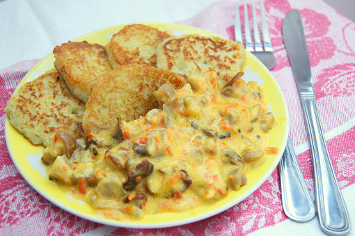

Machanka

Description
Borscht is a soup, usually made with beets, originating from Central and Eastern Europe and Northern Asia. It is especially popular in the cuisines of Russia, Poland, Lithuania, Romania, Latvia, and Ukraine.
Although the beet version is the most well known, it doesn't have to be made with beets. Borscht was a winter soup, often made with sour flavors and topped with a dollop of sour cream.
It was usually made by combining meat or bone stock with sautéed or boiled vegetables. Popular ingredients may include cabbage, carrots, onions, potatoes and/or tomatoes. Sometimes it's puréed; sometimes it's not. Sometimes there's meat; sometimes there's not.
The name of the ancient tart soup is now more associated with the beet-red soup of today. If you want to recreate that traditional tartness, you can serve with lemon wedges on the side or add more vinegar, to taste.
Ingredients
- 1 teaspoon active dry yeast
- 1 2/3 cup milk (warm)
- 2 eggs
- 1 tablespoon sugar
- 1/4 teaspoon salt
- 1 cup flour
- 5 pork sausages
- 1 1/2 cup beer
- 1 cup water
- 1 teaspoon salt
- 2 tablespoons flour
- 4 tablespoons sour cream
- 1 tablespoon vegetable oil (to grease the skillet)
- parsley (or dill)
Steps
- In a large bowl, combine warm milk and yeast. Whisk in eggs. Add sugar, 1/4 teaspoon salt. Gradually add flour and whisk until smooth.
- Place the mixture in a warm place and leave there for 15-20 minutes.
- In a pot, combine water and beer. Add sausages and bring to a boil. Season with salt, reduce heat, cover and cook for 30 minutes.
- While the sausages are cooking, let's make crepes. Heat a lightly oiled skillet over medium heat. Pour or scoop the batter onto it, tilting the pan with a circular motion so that the batter coats the surface evenly. When the bottom is light brown (after about a minute or less), loosen crepe with a spatula, flip and cook the other side. Repeat the process with the rest of the batter.
- Remove sausages from the pot and cut into pieces.
- In a large skillet, heat butter over medium heat. Saute onion until tender (for about 7 minutes). Stir in flour. Gradually add water-beer mixture, constantly stirring until smooth.
- Add sausage pieces to the sauce and cook for another 5 minutes. Stir in sour cream, season with parsley or dill (optional) and turn off the heat.
How to consume the dish?
Serve hot with sour cream?! — Nope! Eat crepes with sausages dipping in machanka sauce.
Приятного аппетита!
Not enough?
Back to recipes!